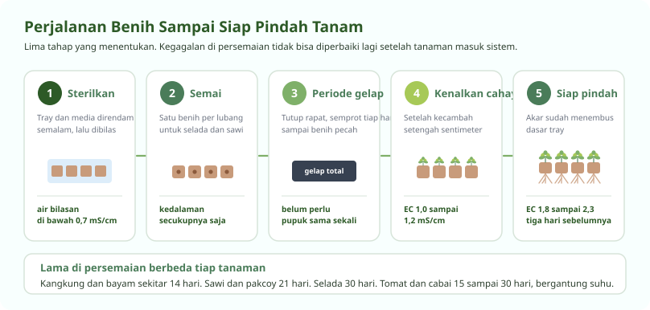

Semua Bermula dari Persemaian
Kesalahan di sini tidak bisa diperbaiki lagi nanti
Bibit yang etiolasi, terserang rebah semai, atau akarnya kerdil tidak akan pulih setelah dipindahkan ke sistem, seberapa pun bagus nutrisinya. Karena itu bagian ini dikerjakan paling teliti di kebun yang baik.
Empat hal yang menentukan: kebersihan, media yang tepat, periode gelap yang benar, dan kepekatan nutrisi yang naik bertahap.

Sterilisasi Tray dan Media
Langkah yang paling sering dilewati, dan paling sering disesali
Tray semai bekas dan media yang belum disterilkan membawa spora jamur penyebab rebah semai. Penyakit ini merobohkan bibit di pangkal batang dalam semalam, dan tidak ada obat yang menyelamatkannya setelah muncul.
-
Rendam tray dan net pot semalaman
Pakai larutan pemutih berbahan natrium hipoklorit dengan pengenceran encer, sekitar satu setengah liter pemutih untuk dua ratus liter air. Pastikan seluruh permukaan terendam, termasuk sela-sela lubang.
-
Rendam media tanam terpisah
Cocopeat dan sekam direndam dalam larutan yang sama semalaman. Cocopeat baru juga perlu ini, karena selain steril, perendaman ikut membuang garam bawaan sabut kelapa.
-
Bilas sampai air buangannya bersih
Bilas dengan air mengalir sampai air yang menetes dari media terbaca di bawah 0,7 mS/cm pada alat EC. Selama angkanya masih tinggi, garam sisa masih ada dan akan mengganggu perhitungan nutrisi Anda nanti.
-
Jangan pakai ulang media bekas tanaman sakit
Kalau kebun Anda pernah kena layu bakteri, media bekasnya dibuang, bukan disterilkan. Biaya media jauh lebih murah daripada kehilangan satu siklus tanam.
Memilih Tray dan Media
Ukuran lubang menentukan berapa lama bibit boleh tinggal
| Tanaman | Tray | Media | Benih per lubang |
|---|---|---|---|
| Selada | 128 lubang | Cocopeat | 1 |
| Selada jenis khusus | 50 lubang dengan net pot | Cocopeat | 1 |
| Pakcoy dan sawi | 128 lubang | Cocopeat | 1 |
| Kangkung | 128 lubang | Cocopeat | 3 sampai 5 |
| Kale | 128 lubang | Cocopeat | 3 |
| Arugula | 50 lubang dengan net pot | Cocopeat | 6 sampai 8 |
| Ketumbar | 128 lubang | Cocopeat | 6 sampai 8 |
| Seledri | 128 lubang | Cocopeat | 4 sampai 5 |
| Tomat | 72 lubang | Cocopeat halus atau rockwool | 1 |
| Cabai dan paprika | 72 lubang | Cocopeat halus atau rockwool | 1 |
| Terong | 72 lubang | Cocopeat halus atau rockwool | 1 |
| Timun dan melon | 72 lubang | Cocopeat halus atau rockwool | 1 |
Aturannya sederhana. Makin besar tanaman dan makin lama ia tinggal di persemaian, makin besar lubang yang dibutuhkan. Tanaman buah selalu memakai tray 72 lubang karena akarnya berkembang jauh lebih cepat daripada sayuran daun.
Tanaman berdaun halus seperti ketumbar dan arugula sengaja ditanam beberapa benih dalam satu lubang. Hasilnya berupa rumpun kecil yang dipanen sekaligus, bukan tanaman tunggal.
Periode Gelap dan Kepekatan Nutrisi
Dua hal yang jarang dijelaskan, padahal menentukan
Periode gelap
Setelah disemai, tray ditutup rapat dari cahaya dan disemprot air setiap hari. Sebagian besar benih sayuran berkecambah lebih serentak dalam gelap, dan kelembapannya lebih mudah dijaga.
Buka penutupnya begitu kecambah sudah memanjang sekitar setengah sentimeter. Terlambat membuka menghasilkan bibit etiolasi, yaitu batang panjang kurus pucat yang tidak akan pernah menjadi tanaman kuat.
Kepekatan yang naik bertahap
| Tahap | EC sasaran | Keterangan |
|---|---|---|
| Sebelum kecambah | Air biasa | Benih masih memakai cadangan makanannya sendiri |
| Daun sejati pertama | 1,0 sampai 1,2 | Pupuk mulai diperlukan, tetapi masih encer |
| Bibit menguat | 1,2 sampai 1,5 | Kepekatan kerja selama di persemaian |
| Tiga hari sebelum pindah | 1,8 sampai 2,3 | Melatih bibit menghadapi larutan di sistem |
Menaikkan EC tiga hari sebelum pindah tanam adalah kebiasaan yang membedakan kebun rapi dari kebun asal jalan. Bibit yang terbiasa larutan encer lalu tiba-tiba masuk sistem ber-EC tinggi akan tercekam dan berhenti tumbuh selama beberapa hari.
Nilai pH di persemaian dijaga 5,8 sampai 6,0. Semprot media, bukan daunnya, dan jangan sampai tray tergenang.
Pindah Tanam
Waktu dan cara memindahkan menentukan berapa hari tanaman tertahan
| Tanaman | Hari di persemaian | Tanda siap pindah |
|---|---|---|
| Kangkung | 10 sampai 14 | Dua daun sejati sudah terbuka |
| Kale | 14 | Akar mulai terlihat di dasar tray |
| Arugula | 14 | Rumpun sudah rapat |
| Timun | 14 | Daun sejati kedua muncul |
| Tomat | 15 sampai 25 | Batang sudah kokoh, tidak rebah |
| Pakcoy dan sawi | 21 | Tiga sampai empat daun sejati |
| Selada | 28 sampai 30 | Akar menembus dasar tray |
| Cabai dan paprika | 30 | Empat daun sejati, batang berkayu muda |
| Terong | 30 | Empat daun sejati |
-
Pindahkan pagi atau sore, jangan siang
Paling lambat pukul sepuluh pagi, atau paling awal pukul tiga sore. Memindahkan di tengah terik membuat bibit kehilangan air lebih cepat daripada akar barunya bisa menyerap.
-
Basahi tray sebelum mencabut
Media yang lembap melepaskan akar tanpa putus. Media kering membuat gumpalan akar hancur, dan tanaman akan tertahan berhari-hari.
-
Pilih hanya bibit yang sehat
Bibit kerdil atau berdaun pucat tidak akan mengejar ketertinggalannya. Menanamnya berarti membuang satu lubang tanam selama satu siklus penuh.
-
Jaga jarak tanam
Untuk sayuran daun sekitar dua puluh sentimeter, untuk tanaman buah mengikuti anjuran jenisnya. Jarak yang terlalu rapat menghambat aliran udara dan mengundang penyakit.
-
Fertigasi pertama segera setelah tanam
Jangan tunggu sampai besok. Akar yang baru dipindah butuh air segera untuk menutup rongga udara di sekitarnya.
Pertanyaan Seputar Modul Ini
Yang paling sering ditanyakan peserta
Kenapa bibit hidroponik saya tumbuh tinggi kurus dan pucat?
Itu etiolasi, dan penyebabnya kurang cahaya. Biasanya terjadi karena penutup periode gelap dibuka terlambat, atau karena tray diletakkan di tempat yang cahayanya kurang setelah benih berkecambah.
Bibit yang sudah telanjur etiolasi tidak bisa diperbaiki. Buang saja dan ulangi semai, karena batang yang lemah akan rebah begitu tanaman membesar. Untuk semai berikutnya, buka penutup begitu kecambah memanjang setengah sentimeter.
Apa penyebab rebah semai atau damping off?
Jamur tanah yang menyerang pangkal batang bibit. Tandanya batang mengecil dan menghitam tepat di permukaan media, lalu bibit roboh meski daunnya masih hijau.
Pemicunya hampir selalu sama: media atau tray yang tidak disterilkan, media terlalu basah, dan aliran udara yang buruk. Setelah muncul, tidak ada obat yang menolong. Pencegahannya sterilkan tray dan media, jangan menyiram berlebihan, dan beri jarak antar tray.
Media semai apa yang paling bagus untuk hidroponik?
Cocopeat paling banyak dipakai di Indonesia karena murah, mudah didapat, dan menahan air dengan baik. Syaratnya harus dicuci dulu sampai air bilasannya di bawah 0,7 mS/cm, karena sabut kelapa membawa garam kalium dan natrium bawaan.
Rockwool lebih seragam dan steril sejak awal, sehingga lebih aman untuk pemula, tetapi harganya lebih mahal dan tidak terurai. Sekam bakar sering dicampurkan untuk memperbaiki aerasi.
Berapa hari bibit selada boleh tinggal di persemaian?
Sekitar 28 sampai 30 hari, dengan tanda akar sudah menembus dasar tray dan tanaman punya empat sampai lima daun sejati. Terlalu lama membuat akar melingkar dan tanaman tertahan setelah dipindah.
Angka itu bergeser mengikuti suhu. Di dataran rendah yang hangat, bibit siap lebih cepat. Percayai tanda pada tanaman, bukan hanya hitungan hari di kalender.
Kapan waktu terbaik memindahkan bibit ke sistem?
Pagi sebelum pukul sepuluh, atau sore setelah pukul tiga. Di luar jam itu penguapan terlalu tinggi, dan akar yang baru dipindah belum mampu mengimbanginya.
Basahi media sebelum mencabut supaya gumpalan akar tidak hancur, dan lakukan fertigasi pertama segera setelah tanam, bukan menunggu hari berikutnya.
Seluruh modul boleh dibaca berurutan atau melompat sesuai kebutuhan. Lihat daftar lengkapnya.